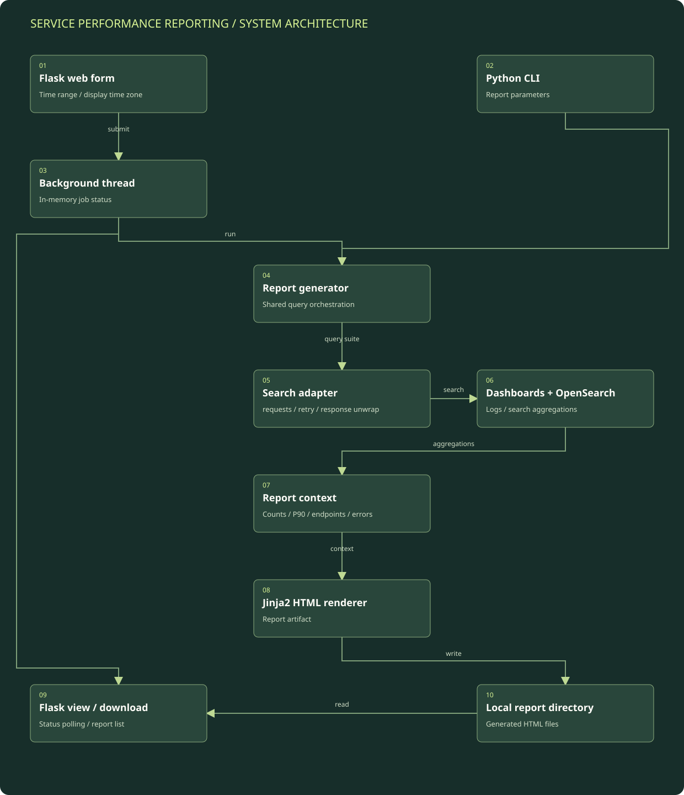

Normalize the review window
The web form or CLI supplies a time range. Time-zone handling converts the query bounds while preserving a selected display time zone in the report.
Detailed architecture / Event and incident reporting
A Flask and Python reporting workflow that queries OpenSearch through the dashboards search interface and renders a shareable HTML performance report.
Reconstructed from reviewed implementation. Environment names and operational identifiers are intentionally generalized.
Boxes represent logical modules and external systems; they do not imply a separate server for each box. On a narrow screen, scroll the diagram horizontally or open the full-size SVG. The tables below provide a text equivalent.

| Component | Responsibility | Boundary / qualification |
|---|---|---|
| Flask UI and job status | Collects parameters and exposes progress and artifact routes. | Threaded execution with process-local state, not a distributed job system. |
| Query client | Wraps the internal search interface and records query context. | Connection details, index names, and real query output are omitted. |
| Aggregation suite | Computes traffic, latency, return-code, endpoint, and application-error sections. | Different sections may intentionally select different populations. |
| Jinja2 renderer | Produces an HTML report from aggregates and error information. | Generated artifacts can contain sensitive operational data in actual use; none are included here. |
| Local storage | Retains report files for viewing and downloading. | No cloud object-store deployment is inferred from this implementation. |
The web form or CLI supplies a time range. Time-zone handling converts the query bounds while preserving a selected display time zone in the report.
The Flask path assigns a job identifier and launches report generation in a background thread. Job state is held in process memory and polled by the loading page.
A requests-based client calls the dashboards internal OpenSearch search endpoint. It unwraps responses and includes timeout and retry handling.
The query suite collects totals, response-time statistics, return-code distributions, time histograms, top/error endpoints, and channel-specific sections. Search-side percentile aggregations supply P90 values.
Jinja2 combines the aggregates, query metadata, and any errors into an HTML file. Flask lists generated reports and provides view/download routes; the CLI can also generate an artifact directly.
Resume: observability, performance investigation, and event-readiness context. Implementation review: Flask background job, dashboards search client, query suite, and Jinja2 report rendering.